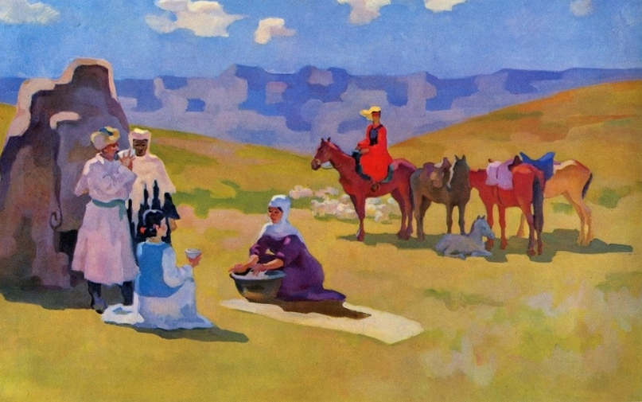

Сабур Мамбеев

Детали:
р. 1928, Казахстан, Семей

Сабур Мамбеев, Весна в горах, 1976, 210 см x 140 см, Масло на холсте.
Сабур Мамбеев: Пионер современного казахского искусства
Сабур Мамбеев прославился своим смелым и инновационным подходом к цвету и форме, часто фокусируясь на пейзажах, исторических темах и портретах. Его работы отражают богатую культуру и природную красоту Казахстана, дополненные современными техниками, которые революционизировали казахское искусство.
Фирменный стиль Мамбеева известен своими динамичными композициями, яркими цветами и эмоциональной глубиной, что делает его ключевой фигурой в мире казахского искусства.